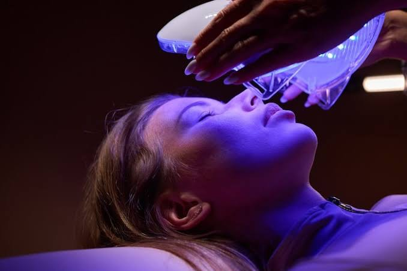

Light-emitting diodes, evidence, and connected devices

Research source 1 of 2
Lasers and lights: How well do they treat acne?
| URL | https://www.aad.org/public/diseases/acne/derm-treat/lasers-lights |
| Site author | American Academy of Dermatology Association |
| Abstract | This patient-focused resource explains how dermatologists use different types of light and laser treatments for acne. It identifies the kinds of blemishes that visible-light devices may help and makes clear that no single light treatment works for every form of acne. The page also discusses at-home devices, which generally operate at lower power than equipment used in a clinic. For this project, the source helps connect electronic hardware to a practical skincare application: light-emitting diodes deliver specific kinds of light under controlled settings. It is useful because it avoids the exaggerated promise that one device can replace all other treatments. The discussion of varying results also shows why users should evaluate marketing claims critically. Overall, the article demonstrates that a technology can be genuinely useful while still having narrow indications, practical limitations, and a continuing role for professional medical guidance. |
Research source 2 of 2
At-Home LED Devices for the Treatment of Acne Vulgaris: A Systematic Review and Meta-Analysis
| URL | https://jamanetwork.com/journals/jamadermatology/fullarticle/2830694 |
| Site author | Sherry Ershadi and John S. Barbieri |
| Abstract | This scholarly article evaluates research on light-emitting diode devices designed for people to use at home for acne. Rather than presenting a single product advertisement, the authors combine findings from existing studies to examine whether LED treatment is associated with improvement. Its scientific approach makes it useful for distinguishing measured evidence from social-media trends. The source also supports a discussion of how consumer electronics move from laboratories and dermatology offices into everyday routines. Important technical questions include wavelength, exposure schedule, device design, and consistency of use. The article does not imply that every device is identical or that LED therapy will work for every person. For a CSIT project, it provides an example of how technological products should be evaluated through research methods, with attention to study quality, realistic expectations, and differences between professional treatments and home equipment. |